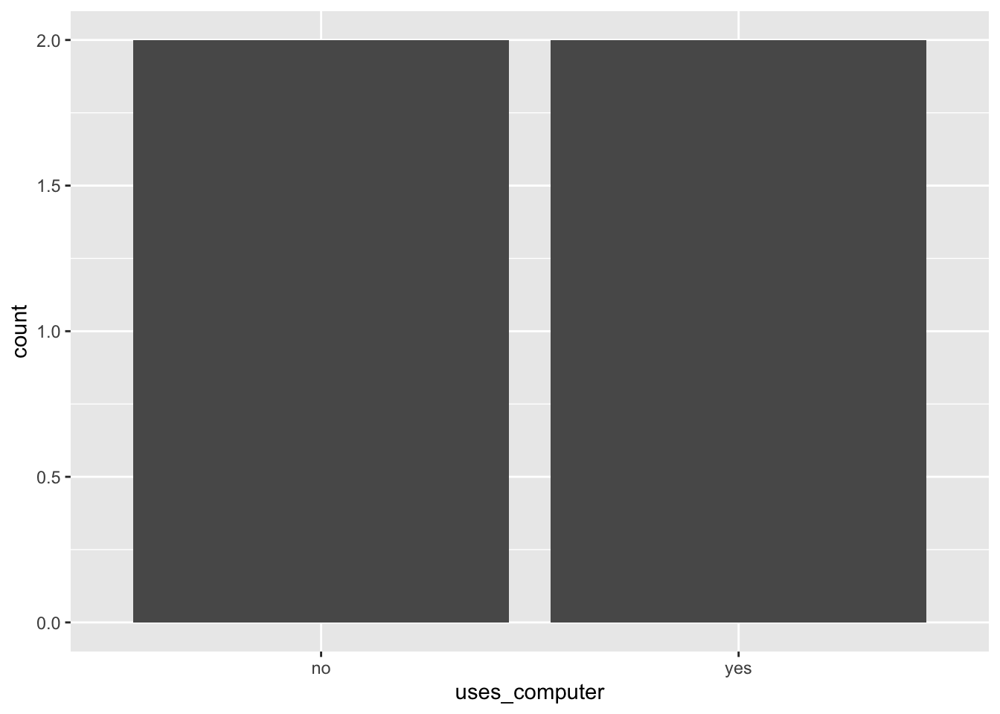
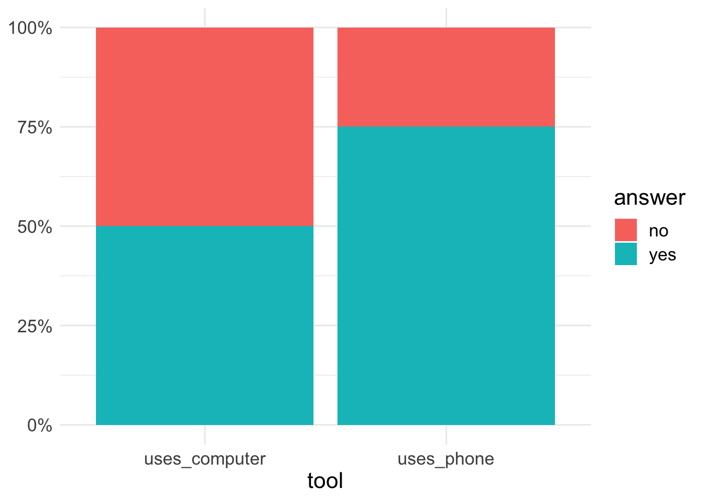
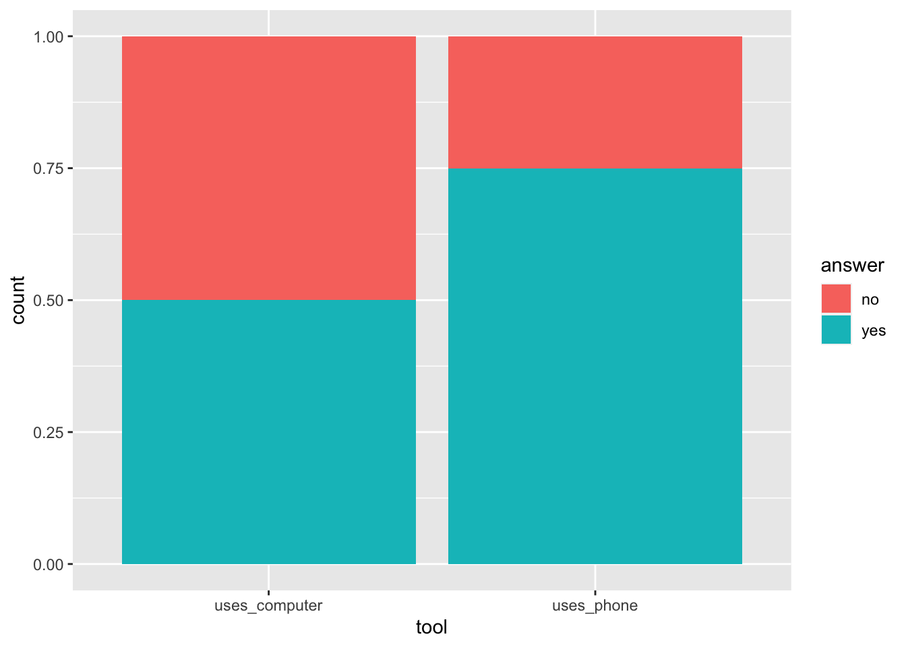

| person_id | uses_phone | uses_computer |
|---|---|---|
| A | yes | no |
| B | yes | yes |
| C | yes | no |
| D | no | yes |
3 Visualising data
3.1 Prepare data for visualisation
Consider the example from class where four people (A, B, C, D) were asked about their tool-preferences for accessing their e-banking account:
- Formally, this dataframe is in
tidy
format and the unit of analysis is theperson_id
Now we represent the same information in a barchart, to compare the frequencies:

But how did we actually input the data? If we try this we only get the variable uses_computer on the x-axis (with the values no and yes):
ggplot(data = wldf, aes(x = uses_computer)) +
geom_bar()
When we go back to the original plot:

we see that we want a variable
toolon the x-axis, that has the valuesuses_computer
anduses_phone
we want a variable
answerthat has the valuesno
andyes
(- we possibly want a variable percentage on the y-axis, that has numeric values according to the proportions)
- In summary, the format of the data needs to change in order to plot
3.2 Option 1: wide-to-long a.k.a stack
In this option we use tidyr::pivot_longer() to create a dataframe in long format:
# we want to stack the columns uses_computer and uses_phone
long_df <-
wldf %>%
pivot_longer(cols = c(uses_computer, uses_phone),
names_to = "tool",
values_to = "answer")
# print the df
long_df# A tibble: 8 × 3
person_id tool answer
<chr> <chr> <chr>
1 A uses_computer no
2 A uses_phone yes
3 B uses_computer yes
4 B uses_phone yes
5 C uses_computer no
6 C uses_phone yes
7 D uses_computer yes
8 D uses_phone no - this dataframe now has the variable
toolandanswerfor the ggplot2-code usinggeom_bar(position = "fill):
ggplot(long_df, aes(x = tool, fill = answer)) +
geom_bar(position = "fill")
- of course, this needed some further
layout-work
to improve the labeling of scales and the removal of the grey-background
ggplot(long_df, aes(x = tool, fill = answer)) +
geom_bar(position = "fill") +
scale_y_continuous(name = NULL,
labels = scales::percent) +
theme_minimal() +
theme(text = element_text(size = 16))
3.3 Option 2: Aggregation of values before plotting
Another option is to aggregate (or summarise) values manually, before we pass them to a plotting function (the example above is not really a good example for this), but the code might be handy if you have more variables than 2 for this situation.
In the example, we’d need to have three variables as indicated above: tool (for the x-axis), answer for the fill and percent for the percentage. We can create this table with:
agg_data <-
wldf |>
select(uses_computer, uses_phone) |>
as.list() |>
map_dfr(~janitor::tabyl(.x), .id = "tool") |>
rename(answer = .x)
# print agg_data
agg_data tool answer n percent
uses_computer no 2 0.50
uses_computer yes 2 0.50
uses_phone no 1 0.25
uses_phone yes 3 0.75And then we can plot it:
ggplot(data = agg_data, aes(x = tool, y = percent, fill = answer)) +
geom_col(position = "stack")
- Careful: instead of using
geom_bar(position="fill")without a y-variable, here we pass thepercent-value to the y-axis and usegeom_col(position="stack")for theanswer-variable
An finally, improve the layout:
ggplot(data = agg_data, aes(x = tool, y = percent, fill = answer)) +
geom_col(position = "stack") +
scale_y_continuous(name = NULL,
labels = scales::percent) +
theme_minimal() +
theme(text = element_text(size = 16))